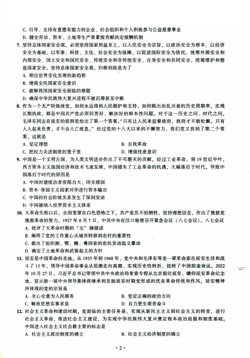
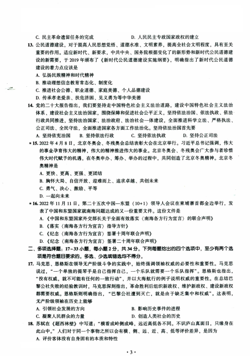
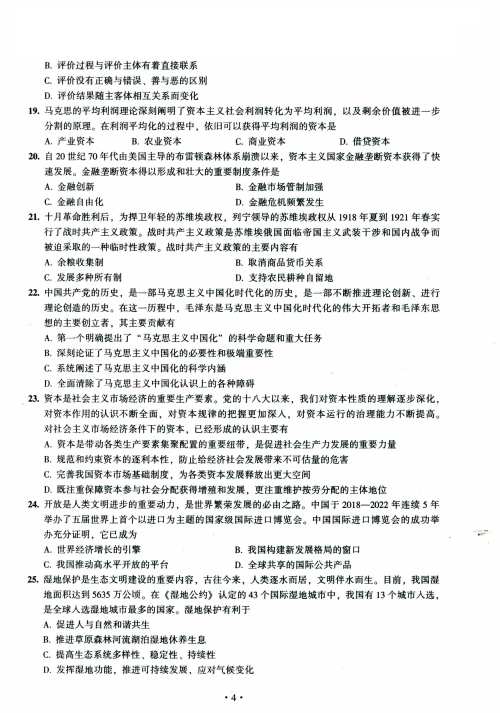
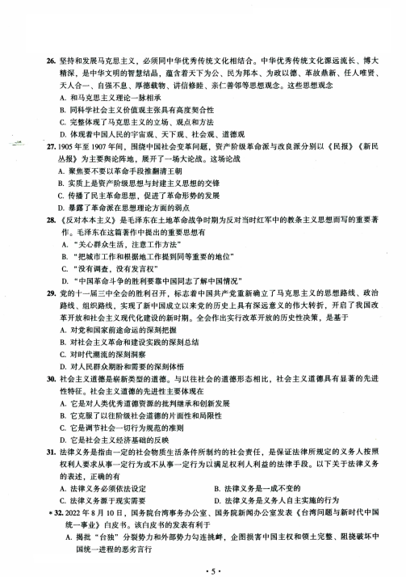
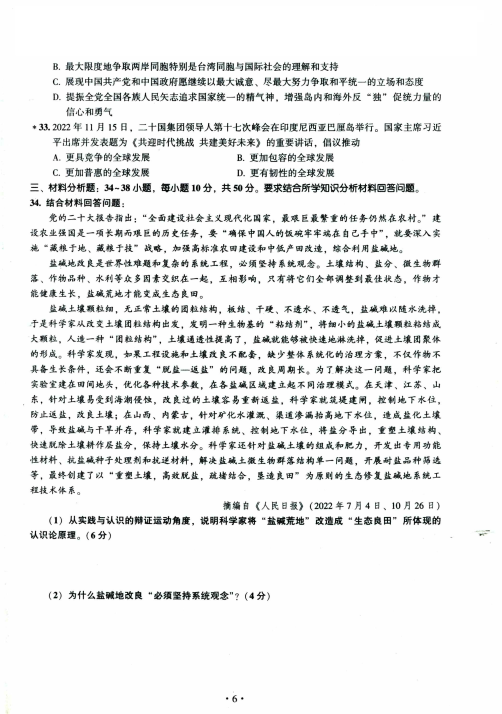
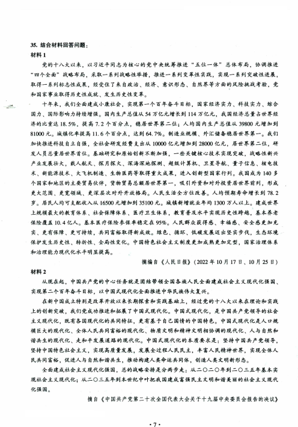
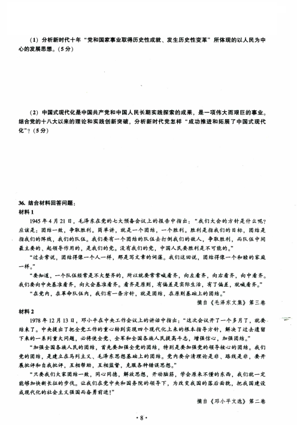
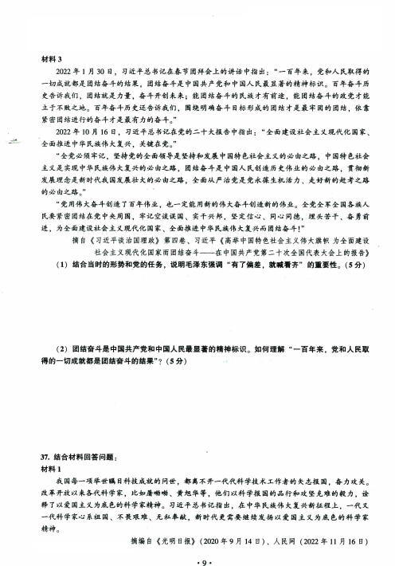
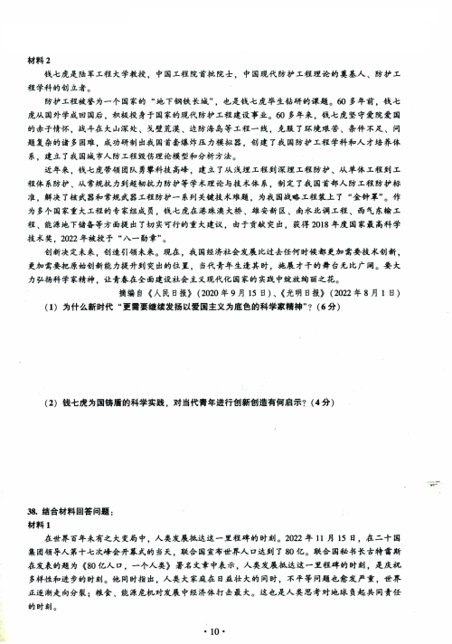
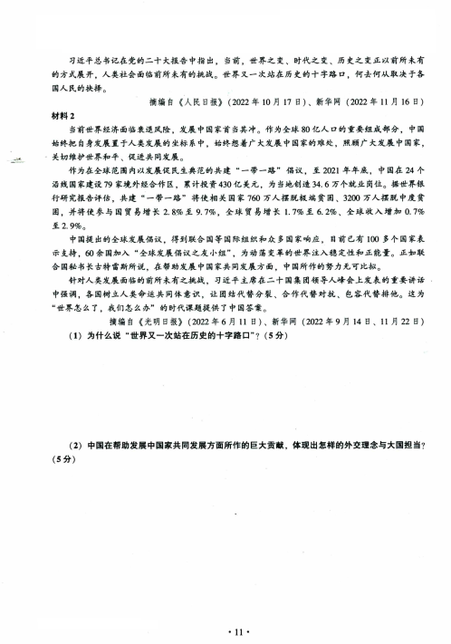

第 1 / 11 页

2023年全国硕士研究生招生考试思想政治理论试题
一、单项选择题：1~16小题，每小题1分，共16分。下列每题给出的四个选项中，只有一个选项
是最符合题目要求的。
1. 习近平总书记在为《复兴文库》所写的序言中指出：“修史立典，存史启智，以文化人，这是中
华民族延续几千年的一个传统。” “编纂出版《复兴文库》大型历史文献丛书，就是要通过对近代
以来重要思想文献的选编，述录先人的开拓，启迪来者的奋斗。”“历史是最好的教科书，一切向
前走，都不能忘记走过的路；走得再远、走到再光辉的未来，也不能忘记走过的过去。”这表明
A,历史、现实、未来是相通的
B. 一切历史都是当代史
C.历史过程不包含任何偶然的因素
D.历史事件往往可以完整重复和再现
2. 社会形态是关于社会运动的具体形式、发展阶段和不同质态的范畴，是同生产力发展一定阶段相
适应的经济基础与上层建筑的统一体。人类社会历史划分为原始社会、奴隶社会、封建社会、资
本主义社会和共产主义社会（社会主义社会是其第一阶段）五种社会形态，其依据是
A.生产工具的质量和数量
B.统治集团的阶级和政治属性
C,经济基础特别是生产关系的性质
D.人们的社会交往和分工的范围和水平
3. 马克思在《资本论》中指出：“不管生产力发生了什么变化，同一劳动在同样的时间内提供的价
值量总是相同的。但它在同样的时间内提供的使用价值量会是不同的：生产力提高时就多些，生
产力降低时就少些。”这段话表明.生产力的变化
A. 不影响同一劳动在同样的时间内生产的商品数量
B, 不改变同一劳动在同样的时间内的效率
C. 影响同一劳动在同样的时间内生产的单个商品价值量
D, 改变同一劳动在同样的时间内提供的价值总量
4. 垄断组织通过制定垄断价格来获得垄断利润。在市场交易过程中，垄断组织获利高低实际上受到
很多因素的影响。为了避免遭受净亏损，垄断组织所能接受的最低价格是
A,成本价格
B,生产价格
C.垄断低价
D,垄断高价
5. 什么是社会主义、怎样建设社会主义，是邓小平在领导改革开放和现代化建设过程中，不断提出
和反复思考的首要的基本的理论问题。搞清楚这一基本理论问题，关键是要
A, 科学分析我国社会的主要矛盾
B. 廓清不合乎时代进步和社会发展规律的模糊观念
C. 系统总结社会主义社会发展的经验
D, 在坚持社会主义基本制度的基础上进一步认清社会主义的本质
6. 共同富裕是中国特色社会主义的本质要求。分配制度是促进共同富裕的基础性制度，坚持按劳分
配为主体、多种分配方式并存，构建初次分配、再分配、第三次分配协调配套的制度体系，对于
处理效率和公平的关系、逐步缩小收入差距具有非常重要的意义。在这一制度体系中，除了健全
完善初次分配、再分配机制外，还要重视发挥第三次分配的作用。当前，要发挥好第三次分配的
作用需要做的是
A. 提高劳动报酬在分配中的比重
B, 加大税收、社保、转移支付等的调节力度
• 1 •
查看 / 复制本页文字
2023年全国硕士研究生招生考试思想政治理论试题 一、单项选择题：1~16小题，每小题1分，共16分。下列每题给出的四个选项中，只有一个选项 是最符合题目要求的。 1. 习近平总书记在为《复兴文库》所写的序言中指出：“修史立典，存史启智，以文化人，这是中 华民族延续几千年的一个传统。” “编纂出版《复兴文库》大型历史文献丛书，就是要通过对近代 以来重要思想文献的选编，述录先人的开拓，启迪来者的奋斗。”“历史是最好的教科书，一切向 前走，都不能忘记走过的路；走得再远、走到再光辉的未来，也不能忘记走过的过去。”这表明 A,历史、现实、未来是相通的 B. 一切历史都是当代史 C.历史过程不包含任何偶然的因素 D.历史事件往往可以完整重复和再现 2. 社会形态是关于社会运动的具体形式、发展阶段和不同质态的范畴，是同生产力发展一定阶段相 适应的经济基础与上层建筑的统一体。人类社会历史划分为原始社会、奴隶社会、封建社会、资 本主义社会和共产主义社会（社会主义社会是其第一阶段）五种社会形态，其依据是 A.生产工具的质量和数量 B.统治集团的阶级和政治属性 C,经济基础特别是生产关系的性质 D.人们的社会交往和分工的范围和水平 3. 马克思在《资本论》中指出：“不管生产力发生了什么变化，同一劳动在同样的时间内提供的价 值量总是相同的。但它在同样的时间内提供的使用价值量会是不同的：生产力提高时就多些，生 产力降低时就少些。”这段话表明.生产力的变化 A. 不影响同一劳动在同样的时间内生产的商品数量 B, 不改变同一劳动在同样的时间内的效率 C. 影响同一劳动在同样的时间内生产的单个商品价值量 D, 改变同一劳动在同样的时间内提供的价值总量 4. 垄断组织通过制定垄断价格来获得垄断利润。在市场交易过程中，垄断组织获利高低实际上受到 很多因素的影响。为了避免遭受净亏损，垄断组织所能接受的最低价格是 A,成本价格 B,生产价格 C.垄断低价 D,垄断高价 5. 什么是社会主义、怎样建设社会主义，是邓小平在领导改革开放和现代化建设过程中，不断提出 和反复思考的首要的基本的理论问题。搞清楚这一基本理论问题，关键是要 A, 科学分析我国社会的主要矛盾 B. 廓清不合乎时代进步和社会发展规律的模糊观念 C. 系统总结社会主义社会发展的经验 D, 在坚持社会主义基本制度的基础上进一步认清社会主义的本质 6. 共同富裕是中国特色社会主义的本质要求。分配制度是促进共同富裕的基础性制度，坚持按劳分 配为主体、多种分配方式并存，构建初次分配、再分配、第三次分配协调配套的制度体系，对于 处理效率和公平的关系、逐步缩小收入差距具有非常重要的意义。在这一制度体系中，除了健全 完善初次分配、再分配机制外，还要重视发挥第三次分配的作用。当前，要发挥好第三次分配的 作用需要做的是 A. 提高劳动报酬在分配中的比重 B, 加大税收、社保、转移支付等的调节力度 • 1 •
第 2 / 11 页

C. 引导、支持有意愿有能力的企业、社会组织和个人积极参与公益慈善事业
D. 健全劳动、资本、土地等生产要素按贡献决定报酬机制
7. 坚持总体国家安全观，必须坚持国家利益至上，以人民安全为宗旨，以政治安全为根本，以经济
安全为基础，以军事、科技、文化、社会安全为保障，以促进国际安全为依托，统筹外部安全和
内部安全、国土安全和国民安全、传统安全和非传统安全、自身安全和共同安全，统筹维护和塑
造国家安全。坚持总体国家安全观，归根到底是为了
A. 顺应世界变化发展的新趋势
B. 增强全民国家安全意识
C. 破解我国国家安全面临的难题
D. 确保中华民族伟大复兴进程不被迟滞甚至中断
8. 作为一个无产阶级政党，如何永远得到人民拥护和支持，如何跳出治乱兴衰的历史周期率，实现
长期执政，都是中国共产党必须回答好、解决好的根本性问题。对于这一历史之问、时代之问，
毛泽东同志在延安的窑洞里给出了第一个答案:“只有让人民来监督政府，政府才不敢松懈。只有
人人起来负责，才不会人亡政息。”经过党的十八大以来的不懈努力，我们党又找到了第二个答
案，这就是
A.坚定理想
B.自我革命
C,把权力关进制度的笼子里
D.增强忧患意识
9. 中国是一个文明古国，为人类文明进步作出了不可磨灭的贡献。经过工业革命，到19世纪中叶，
西方资本主义强国经济和技术飞速发展。中国错失了工业革命的机遇，大幅落后于时代。导致中
国落后于时代的原因是
A, 中国封建统治者夜郎自大、闭关锁国
B, 资本-帝国主义国家对华进行资本输出
C, 中国的社会阶级关系发生了深刻变动
D, 中国被纳入世界资本主义体系
10. 大革命失败以后，全国笼罩在白色恐怖之下。共产党员不怕牺牲，坚持理想信念，作出了挽救党
挽救革命的努力。1927年8月7日，中共中央在汉口秘密召开紧急会议（八七会议）。八七会议
A. 批评了大革命时期的“左”倾错误
B. 阐明了党的工作重心从城市转移到农村的重要性
C. 提出了组织湘、鄂、赣、粤四省的农民发动起义暴动
D. 确定了土地革命和武装起义的方针
11. 延安是中国革命的圣地。从1935年到1948年，党中央和毛泽东等老一辈革命家在延安生活和战
斗了 13年，领导中国革命事业从低潮走向高潮、实现历史性转折，扭转了中国前途命运。2022
年10月27日，习近平总书记带领中共中央政治局常委专程从北京前往延安，瞻仰延安革命纪念
地，宣示新一届中央领导集体将继承和发扬延安时期党形成的优良革命传统和作风。延安精神
所体现的党的宗旨是
A,全心全意为人民服务
B.坚定正确的政治方向
C.解放思想实事求是
D.自力更生艰苦奋斗
12. 社会主义革命和建设时期，党面临的主要任务是，实现从新民主主义到社会主义的转变，进行
社会主义革命，推进社会主义建设，为实现中华民族伟大复兴奠定根本政治前提和制度基础。
中国进入社会主义社会最主要的标志是
A,社会主义政治制度的确立
B.社会主义经济制度的确立
• 2 •
查看 / 复制本页文字
C. 引导、支持有意愿有能力的企业、社会组织和个人积极参与公益慈善事业 D. 健全劳动、资本、土地等生产要素按贡献决定报酬机制 7. 坚持总体国家安全观，必须坚持国家利益至上，以人民安全为宗旨，以政治安全为根本，以经济 安全为基础，以军事、科技、文化、社会安全为保障，以促进国际安全为依托，统筹外部安全和 内部安全、国土安全和国民安全、传统安全和非传统安全、自身安全和共同安全，统筹维护和塑 造国家安全。坚持总体国家安全观，归根到底是为了 A. 顺应世界变化发展的新趋势 B. 增强全民国家安全意识 C. 破解我国国家安全面临的难题 D. 确保中华民族伟大复兴进程不被迟滞甚至中断 8. 作为一个无产阶级政党，如何永远得到人民拥护和支持，如何跳出治乱兴衰的历史周期率，实现 长期执政，都是中国共产党必须回答好、解决好的根本性问题。对于这一历史之问、时代之问， 毛泽东同志在延安的窑洞里给出了第一个答案:“只有让人民来监督政府，政府才不敢松懈。只有 人人起来负责，才不会人亡政息。”经过党的十八大以来的不懈努力，我们党又找到了第二个答 案，这就是 A.坚定理想 B.自我革命 C,把权力关进制度的笼子里 D.增强忧患意识 9. 中国是一个文明古国，为人类文明进步作出了不可磨灭的贡献。经过工业革命，到19世纪中叶， 西方资本主义强国经济和技术飞速发展。中国错失了工业革命的机遇，大幅落后于时代。导致中 国落后于时代的原因是 A, 中国封建统治者夜郎自大、闭关锁国 B, 资本-帝国主义国家对华进行资本输出 C, 中国的社会阶级关系发生了深刻变动 D, 中国被纳入世界资本主义体系 10. 大革命失败以后，全国笼罩在白色恐怖之下。共产党员不怕牺牲，坚持理想信念，作出了挽救党 挽救革命的努力。1927年8月7日，中共中央在汉口秘密召开紧急会议（八七会议）。八七会议 A. 批评了大革命时期的“左”倾错误 B. 阐明了党的工作重心从城市转移到农村的重要性 C. 提出了组织湘、鄂、赣、粤四省的农民发动起义暴动 D. 确定了土地革命和武装起义的方针 11. 延安是中国革命的圣地。从1935年到1948年，党中央和毛泽东等老一辈革命家在延安生活和战 斗了 13年，领导中国革命事业从低潮走向高潮、实现历史性转折，扭转了中国前途命运。2022 年10月27日，习近平总书记带领中共中央政治局常委专程从北京前往延安，瞻仰延安革命纪念 地，宣示新一届中央领导集体将继承和发扬延安时期党形成的优良革命传统和作风。延安精神 所体现的党的宗旨是 A,全心全意为人民服务 B.坚定正确的政治方向 C.解放思想实事求是 D.自力更生艰苦奋斗 12. 社会主义革命和建设时期，党面临的主要任务是，实现从新民主主义到社会主义的转变，进行 社会主义革命，推进社会主义建设，为实现中华民族伟大复兴奠定根本政治前提和制度基础。 中国进入社会主义社会最主要的标志是 A,社会主义政治制度的确立 B.社会主义经济制度的确立 • 2 •
第 3 / 11 页

C.民主革命遗留任务的完成
D.人民民主专政国家政权的建立
13. 公民道德建设，对于提高人民思想觉悟、道德水准、文明素养，提高全社会文明程度，具有至关
重要的作用。适应新时代、新要求，中共中央、国务院根据变化了的新形势和新时代公民道德建
设的新需要，于2019年颁布了《新时代公民道德建设实施纲要》，明确指出了新时代公民道德
建设的着力点应该是
A. 弘扬民族精神和时代精神
B. 推动理想信念教育常态化、制度化
C. 推进社会公德、职业道德、家庭美德、个人品德建设
D. 传承孝老爱亲、扶危济困、见义勇为等中华美德
14. 党的二十大报告指出，我们要坚持走中国特色社会主义法治道路，建设中国特色社会主义法治
体系、建设社会主义法治国家，围绕保障和促进社会公平正义，坚持依法治国、依法执政、依法
行政共同推进，坚持法治国家、法治政府、法治社会一体建设，全面推进科学立法、严格执法、
公正司法、全民守法，全面推进国家各方面工作法治化。坚持依法治国首先要
A.坚持依宪治国 B.坚持依法行政
C.坚持依法执政
D.坚持公正司法
*15.2022年4月8日，北京冬奥会、冬残奥会总结表彰大会在北京举行。习近平总书记强调，伟大
的事业孕育伟大的精神，伟大的精神推进伟大的事业。北京冬奥会、冬残奥会广大参与者珍惜
伟大时代赋予的机遇，在冬奥申办、筹办、举办的过程中，共同创造了北京冬奥精神。北京冬
奥精神是
A. 更快、更高、更强、更团结
B. 胸怀大局、自信开放、迎难而上、追求卓越、共创未来
C. 勇气、决心、激励、平等
D. 一起向未来
* 16. 2022年11月11日，第二十五次中国一东盟（10+1）领导人会议在柬埔寨首都金边举行，发
表了中国和东盟国家就南海问题达成的又一份重要文件。这份文件是
A.
《中国和东盟国家外交部长关于全面有效落实〈南海各方行为宣言〉的联合声明》
B.
《落实〈南海各方行为宣言〉指导方针》
C.
《纪念〈南海各方行为宣言〉签署十周年联合声明》
D.
《纪念〈南海各方行为宣言〉签署二十周年联合声明》
二、多项选择题：17~33小题，每小题2分，共34分。下列每题给出的四个选项中，至少有两个选
项是符合题目要求的。多选、少选或错选均不得分。
17. 马克思、恩格斯在领导无产阶级斗争的实践中，始终强调领袖权威的必要性和重要性。马克思
说过，，，一个单独的提琴手是自己指挥自己，一个乐队就需要一个乐队指挥”。恩格斯也指出，
“没有权威，就不可能有任何的一致行动”，并以大海航行的例子说明权威的重要性。在总结巴
黎公社失败的经验教训时，马克思深刻指出，革命胜利后组织新政权、维护新政权、建设新政权
都需要权威。恩格斯则明确指出，“巴黎公社遭到灭亡，就是由于缺乏集中和权威”。这表明，
无产阶级领袖在历史上能够
A.引领社会发展的方向
B,影响历史事件的进程
C.凝聚人民群众的力量
D.创造人类社会的历史
18. 苏轼在《题西林壁》中写道：“横看成岭侧成峰，远近高低各不同。不识庐山真面目，只缘身在
此山中。”人们对于同一个事物之所以会有横、侧、远、近、高、低等评价差异，是因为
A.评价客体没有自身固有的本质和特性
-3 •
查看 / 复制本页文字
C.民主革命遗留任务的完成 D.人民民主专政国家政权的建立 13. 公民道德建设，对于提高人民思想觉悟、道德水准、文明素养，提高全社会文明程度，具有至关 重要的作用。适应新时代、新要求，中共中央、国务院根据变化了的新形势和新时代公民道德建 设的新需要，于2019年颁布了《新时代公民道德建设实施纲要》，明确指出了新时代公民道德 建设的着力点应该是 A. 弘扬民族精神和时代精神 B. 推动理想信念教育常态化、制度化 C. 推进社会公德、职业道德、家庭美德、个人品德建设 D. 传承孝老爱亲、扶危济困、见义勇为等中华美德 14. 党的二十大报告指出，我们要坚持走中国特色社会主义法治道路，建设中国特色社会主义法治 体系、建设社会主义法治国家，围绕保障和促进社会公平正义，坚持依法治国、依法执政、依法 行政共同推进，坚持法治国家、法治政府、法治社会一体建设，全面推进科学立法、严格执法、 公正司法、全民守法，全面推进国家各方面工作法治化。坚持依法治国首先要 A.坚持依宪治国 B.坚持依法行政 C.坚持依法执政 D.坚持公正司法 *15.2022年4月8日，北京冬奥会、冬残奥会总结表彰大会在北京举行。习近平总书记强调，伟大 的事业孕育伟大的精神，伟大的精神推进伟大的事业。北京冬奥会、冬残奥会广大参与者珍惜 伟大时代赋予的机遇，在冬奥申办、筹办、举办的过程中，共同创造了北京冬奥精神。北京冬 奥精神是 A. 更快、更高、更强、更团结 B. 胸怀大局、自信开放、迎难而上、追求卓越、共创未来 C. 勇气、决心、激励、平等 D. 一起向未来 * 16. 2022年11月11日，第二十五次中国一东盟（10+1）领导人会议在柬埔寨首都金边举行，发 表了中国和东盟国家就南海问题达成的又一份重要文件。这份文件是 A. 《中国和东盟国家外交部长关于全面有效落实〈南海各方行为宣言〉的联合声明》 B. 《落实〈南海各方行为宣言〉指导方针》 C. 《纪念〈南海各方行为宣言〉签署十周年联合声明》 D. 《纪念〈南海各方行为宣言〉签署二十周年联合声明》 二、多项选择题：17~33小题，每小题2分，共34分。下列每题给出的四个选项中，至少有两个选 项是符合题目要求的。多选、少选或错选均不得分。 17. 马克思、恩格斯在领导无产阶级斗争的实践中，始终强调领袖权威的必要性和重要性。马克思 说过，，，一个单独的提琴手是自己指挥自己，一个乐队就需要一个乐队指挥”。恩格斯也指出， “没有权威，就不可能有任何的一致行动”，并以大海航行的例子说明权威的重要性。在总结巴 黎公社失败的经验教训时，马克思深刻指出，革命胜利后组织新政权、维护新政权、建设新政权 都需要权威。恩格斯则明确指出，“巴黎公社遭到灭亡，就是由于缺乏集中和权威”。这表明， 无产阶级领袖在历史上能够 A.引领社会发展的方向 B,影响历史事件的进程 C.凝聚人民群众的力量 D.创造人类社会的历史 18. 苏轼在《题西林壁》中写道：“横看成岭侧成峰，远近高低各不同。不识庐山真面目，只缘身在 此山中。”人们对于同一个事物之所以会有横、侧、远、近、高、低等评价差异，是因为 A.评价客体没有自身固有的本质和特性 -3 •
第 4 / 11 页

B. 评价过程与评价主体有着直接联系
C. 评价没有正确与错误、善与恶的区别
D. 评价结果随主客体相互关系而变化
19. 马克思的平均利润理论深刻阐明了资本主义社会利润转化为平均利润，以及剩余价值被进一步
分割的原理。在利润平均化的过程中，依旧可以获得平均利润的资本是
A,产业资本 B.农业资本
C.商业资本
D.借贷资本
20. 自20世纪70年代由美国主导的布雷顿森林体系崩溃以来，资本主义国家金融垄断资本获得了快
速发展。金融垄断资本得以形成和壮大的重要制度条件是
A.金融创新
B.金融市场管制加强
C.金融自由化
D.金融危机频繁发生
21. 十月革命胜利后，为捍卫年轻的苏维埃政权，列宁领导的苏维埃政权从1918年夏到1921年春实
行了战时共产主义政策。战时共产主义政策是苏维埃俄国面临帝国主义武装干涉和国内战争而
被迫采取的一种临时性政策。战时共产主义政策的主要内容有
A.余粮收集制
B.取消商品货币关系
C.发展多种所有制
D.支持农民耕种自留地
22. 中国共产党的历史，是一部马克思主义中国化时代化的历史，是一部不断推进理论创新、进行
理论创造的历史。在这一历程中，毛泽东是马克思主义中国化时代化的伟大开拓者和毛泽东思
想的主要创立者，其主要贡献有
A. 第一个明确提出了 “马克思主义中国化”的科学命题和重大任务
B. 深刻论证了马克思主义中国化的必要性和极端重要性
C. 系统阐述了马克思主义中国化的科学内涵
D. 全面清除了马克思主义中国化认识上的各种障碍
23. 资本是社会主义市场经济的重要生产要素。党的十八大以来，我们对资本性质的理解逐步深化,
对资本作用的认识不断全面，对资本规律的把握更加深入，对资本运行的治理能力不断提高。
对社会主义市场经济条件下的资本，已经形成的认识主要有
A. 资本是带动各类生产要素集聚配置的重要纽带，是促进社会生产力发展的重要力量
B. 规范和约束资本的逐利本性，防止给经济社会发展带来不可估量的危害
C. 完善我国资本市场基础制度，为各类资本发展释放出更大空间
D. 既注重保障资本参与社会分配获得增殖和发展，更注重维护按劳分配的主体地位
24. 开放是人类文明进步的重要动力，是世界繁荣发展的必由之路。中国于2018-2022年连续5年
举办了五届世界上首个以进口为主题的国家级国际进口博览会。中国国际进口博览会的成功举
办充分证明，它已成为
A.世界经济增长的引擎
B.我国构建新发展格局的窗口
C.我国推动高水平开放的平台
D.全球共享的国际公共产品
25. 湿地保护是生态文明建设的重要内容，古往今来，人类逐水而居，文明伴水而生。目前，我国湿
地面积达到5635万公顷。在《湿地公约》认定的43个国际湿地城市中，我国有13个城市入选，
是全球入选湿地城市最多的国家。湿地保护有利于
A. 促进人与自然和谐共生
B. 推进草原森林河流湖泊湿地休养生息
C. 提高生态系统多样性、稳定性、持续性
D. 发挥湿地功能，推进可持续发展，应对气候变化
• 4 •
查看 / 复制本页文字
B. 评价过程与评价主体有着直接联系 C. 评价没有正确与错误、善与恶的区别 D. 评价结果随主客体相互关系而变化 19. 马克思的平均利润理论深刻阐明了资本主义社会利润转化为平均利润，以及剩余价值被进一步 分割的原理。在利润平均化的过程中，依旧可以获得平均利润的资本是 A,产业资本 B.农业资本 C.商业资本 D.借贷资本 20. 自20世纪70年代由美国主导的布雷顿森林体系崩溃以来，资本主义国家金融垄断资本获得了快 速发展。金融垄断资本得以形成和壮大的重要制度条件是 A.金融创新 B.金融市场管制加强 C.金融自由化 D.金融危机频繁发生 21. 十月革命胜利后，为捍卫年轻的苏维埃政权，列宁领导的苏维埃政权从1918年夏到1921年春实 行了战时共产主义政策。战时共产主义政策是苏维埃俄国面临帝国主义武装干涉和国内战争而 被迫采取的一种临时性政策。战时共产主义政策的主要内容有 A.余粮收集制 B.取消商品货币关系 C.发展多种所有制 D.支持农民耕种自留地 22. 中国共产党的历史，是一部马克思主义中国化时代化的历史，是一部不断推进理论创新、进行 理论创造的历史。在这一历程中，毛泽东是马克思主义中国化时代化的伟大开拓者和毛泽东思 想的主要创立者，其主要贡献有 A. 第一个明确提出了 “马克思主义中国化”的科学命题和重大任务 B. 深刻论证了马克思主义中国化的必要性和极端重要性 C. 系统阐述了马克思主义中国化的科学内涵 D. 全面清除了马克思主义中国化认识上的各种障碍 23. 资本是社会主义市场经济的重要生产要素。党的十八大以来，我们对资本性质的理解逐步深化, 对资本作用的认识不断全面，对资本规律的把握更加深入，对资本运行的治理能力不断提高。 对社会主义市场经济条件下的资本，已经形成的认识主要有 A. 资本是带动各类生产要素集聚配置的重要纽带，是促进社会生产力发展的重要力量 B. 规范和约束资本的逐利本性，防止给经济社会发展带来不可估量的危害 C. 完善我国资本市场基础制度，为各类资本发展释放出更大空间 D. 既注重保障资本参与社会分配获得增殖和发展，更注重维护按劳分配的主体地位 24. 开放是人类文明进步的重要动力，是世界繁荣发展的必由之路。中国于2018-2022年连续5年 举办了五届世界上首个以进口为主题的国家级国际进口博览会。中国国际进口博览会的成功举 办充分证明，它已成为 A.世界经济增长的引擎 B.我国构建新发展格局的窗口 C.我国推动高水平开放的平台 D.全球共享的国际公共产品 25. 湿地保护是生态文明建设的重要内容，古往今来，人类逐水而居，文明伴水而生。目前，我国湿 地面积达到5635万公顷。在《湿地公约》认定的43个国际湿地城市中，我国有13个城市入选， 是全球入选湿地城市最多的国家。湿地保护有利于 A. 促进人与自然和谐共生 B. 推进草原森林河流湖泊湿地休养生息 C. 提高生态系统多样性、稳定性、持续性 D. 发挥湿地功能，推进可持续发展，应对气候变化 • 4 •
第 5 / 11 页

26.坚持和发展马克思主义，必须同中华优秀传统文化相结合。中华优秀传统文化源远流长、博大
精深，是中华文明的智慧结晶，蕴含着天下为公、民为邦本、为政以德、革故鼎新、任人唯贤、
天人合一、自强不息、厚德载物、讲信修睦、亲仁善邻等思想观念。这些思想观念
A, 和马克思主义理论一脉相承
B. 同科学社会主义价值观主张具有高度契合性
C. 完整体现了马克思主义的立场、观点和方法
D, 体现着中国人民的宇宙观、天下观、社会观、道德观
27.1905年至1907年间，围绕中国社会变革问题，资产阶级革命派与改良派分别以《民报》《新民
丛报》为主要舆论阵地，展开了一场大论战。这场论战
A. 聚焦要不要以革命手段推翻清王朝
B. 实质上是资产阶级思想与封建主义思想的交锋
C. 传播了民主革命思想，促进了革命形势的发展
D. 暴露了革命派在思想理论方面的弱点
28,
《反对本本主义》是毛泽东在土地革命战争时期为反对当时红军中的教条主义思想而写的重要著
作。毛泽东在这篇著作中提出的重要思想有
A.
“关心群众生活，注意工作方法”
B.
“把城市工作和根据地工作提到同等重要的地位”
C. “没有调查，没有发言权”
D.
“中国革命斗争的胜利要靠中国同志了解中国情况”
29. 党的十一届三中全会的胜利召开，标志着中国共产党重新确立了马克思主义的思想路线、政治
路线、组织路线，实现了新中国成立以来党的历史上具有深远意义的伟大转折，开启了我国改
革开放和社会主义现代化建设的新时期。全会作出实行改革开放的历史性决策，是基于
A. 对党和国家前途命运的深刻把握
B. 对社会主义革命和建设实践的深刻总结
C, 对时代潮流的深刻洞察
D, 对人民群众期盼和需要的深刻体悟
30, 社会主义道德是崭新类型的道德。与以往社会的道德形态相比，社会主义道德具有显著的先进
性特征。社会主义道德的先进性主要体现在
A. 它是对人类优秀道德资源的批判继承和创新发展
B. 它克服了以往阶级社会道德的片面性和局限性
C. 它是调节社会一切行为规范的准则
D. 它是社会主义经济基础的反映
31. 法律义务是指由一定的社会物质生活条件所制约的社会责任，是保证法律所规定的义务人按照
权利人要求从事一定行为或不从事一定行为以满足权利人利益的法律手段。以下关于法律义务
的表述，正确的有
A.法律义务必须依法设定
B.法律义务是一成不变的
C.法律义务源于现实需要
D.法律义务是义务人自主实施的行为
*32.2022年8月10日，国务院台湾事务办公室、国务院新闻办公室发表《台湾问题与新时代中国
统一事业》白皮书。该白皮书的发表有利于
A.揭批“台独”分裂势力和外部势力勾连挑衅，企图损害中国主权和领土完整、阻挠破坏中
国统一进程的恶劣言行
• 5 •
查看 / 复制本页文字
26.坚持和发展马克思主义，必须同中华优秀传统文化相结合。中华优秀传统文化源远流长、博大 精深，是中华文明的智慧结晶，蕴含着天下为公、民为邦本、为政以德、革故鼎新、任人唯贤、 天人合一、自强不息、厚德载物、讲信修睦、亲仁善邻等思想观念。这些思想观念 A, 和马克思主义理论一脉相承 B. 同科学社会主义价值观主张具有高度契合性 C. 完整体现了马克思主义的立场、观点和方法 D, 体现着中国人民的宇宙观、天下观、社会观、道德观 27.1905年至1907年间，围绕中国社会变革问题，资产阶级革命派与改良派分别以《民报》《新民 丛报》为主要舆论阵地，展开了一场大论战。这场论战 A. 聚焦要不要以革命手段推翻清王朝 B. 实质上是资产阶级思想与封建主义思想的交锋 C. 传播了民主革命思想，促进了革命形势的发展 D. 暴露了革命派在思想理论方面的弱点 28, 《反对本本主义》是毛泽东在土地革命战争时期为反对当时红军中的教条主义思想而写的重要著 作。毛泽东在这篇著作中提出的重要思想有 A. “关心群众生活，注意工作方法” B. “把城市工作和根据地工作提到同等重要的地位” C. “没有调查，没有发言权” D. “中国革命斗争的胜利要靠中国同志了解中国情况” 29. 党的十一届三中全会的胜利召开，标志着中国共产党重新确立了马克思主义的思想路线、政治 路线、组织路线，实现了新中国成立以来党的历史上具有深远意义的伟大转折，开启了我国改 革开放和社会主义现代化建设的新时期。全会作出实行改革开放的历史性决策，是基于 A. 对党和国家前途命运的深刻把握 B. 对社会主义革命和建设实践的深刻总结 C, 对时代潮流的深刻洞察 D, 对人民群众期盼和需要的深刻体悟 30, 社会主义道德是崭新类型的道德。与以往社会的道德形态相比，社会主义道德具有显著的先进 性特征。社会主义道德的先进性主要体现在 A. 它是对人类优秀道德资源的批判继承和创新发展 B. 它克服了以往阶级社会道德的片面性和局限性 C. 它是调节社会一切行为规范的准则 D. 它是社会主义经济基础的反映 31. 法律义务是指由一定的社会物质生活条件所制约的社会责任，是保证法律所规定的义务人按照 权利人要求从事一定行为或不从事一定行为以满足权利人利益的法律手段。以下关于法律义务 的表述，正确的有 A.法律义务必须依法设定 B.法律义务是一成不变的 C.法律义务源于现实需要 D.法律义务是义务人自主实施的行为 *32.2022年8月10日，国务院台湾事务办公室、国务院新闻办公室发表《台湾问题与新时代中国 统一事业》白皮书。该白皮书的发表有利于 A.揭批“台独”分裂势力和外部势力勾连挑衅，企图损害中国主权和领土完整、阻挠破坏中 国统一进程的恶劣言行 • 5 •
第 6 / 11 页

B. 最大限度地争取两岸同胞特别是台湾同胞与国际社会的理解和支持
C. 展现中国共产党和中国政府愿继续以最大诚意、尽最大努力争取和平统一的立场和态度
D. 提振全党全国各族人民矢志追求国家统一的精气神，增强岛内和海外反“独”促统力量的
信心和勇气
*33. 2022年11月15日，二十国集团领导人第十七次峰会在印度尼西亚巴厘岛举行。国家主席习近
平出席并发表题为《共迎时代挑战共建美好未来》的重要讲话，倡议推动
A.更具竞争的全球发展
B.更加包容的全球发展
C.更加普惠的全球发展
D.更有韧性的全球发展
三、材料分析题：34~38小题，每小题10分，共50分。要求结合所学知识分析材料回答问题。
34.结合材料回答问题：
党的二十大报告指出：“全面建设社会主义现代化国家，最艰巨最繁重的任务仍然在农村。”建
设农业强国是一项长期而艰巨的历史任务，要“确保中国人的饭碗牢牢端在自己手中"，就要深入实
施“藏粮于地、藏粮于技”战略，加强高标准农田建设和中低产田改造，综合利用盐碱地。
盐碱地改良是世界性难题和复杂的系统工程，必须坚持系统观念。土壤结构、盐分、微生物群
落、作物品种、水利等众多因素交织在一起，互相影响，只有将它们全部调整到最佳状态，作物才
能健康生长，盐碱荒地才能变成生态良田。
盐碱土壤颗粒细，无正常土壤的团粒结构，板结、干硬、不透水、不透气，盐碱难以随水洗掉，
于是科学家从改变土壤团粒结构出发，发明一种生物基的“粘结剂”，将细小的盐碱土壤颗粒粘结成
大颗粒，人造一种“团粒结构”，土壤通透性提高了，盐碱就能够被快速地淋洗掉，促进土壤团聚体
的形成。科学家发现，如果工程设施和土壤改良不配套，缺少整体系统化的治理方案，不仅作物不
具备生长条件，还会不断重复“脱盐一返盐”的问题，改良周期长。为了解决这一问题，科学家把
实验室建在田间地头，优化各种技术参数，在各盐碱区域建立起不同治理模式。在天津、江苏、山
东，针对土壤易受到海潮侵蚀，改良过的土壤容易重新返盐，科学家就筑堤建闸，控制地下水位，
防止返盐，改良土壤；在山西、内蒙古，针对矿化水灌溉、渠道渗漏抬高地下水位，造成盐化土壤
带，导致盐碱与干旱并存，科学家就建立灌排系统、控制地下水位，将盐分导出，重塑土壤结构、
快速脱除土壤耕作层盐分，保持土壤水分。科学家还针对盐碱土壤的组成和肥力，开发出专用功能
性材料、抗盐碱种子处理剂和抗逆材料，解决盐碱土微生物群落结构单一问题，开展耐盐品种筛选
等，最终创建了以“重塑土壤，高效脱盐，疏堵结合，垦造良田”为原则的生态修复盐碱地系统工
程技术体系。
摘编自《人民日报》（2022年7月4日、10月2 6 H ）
（1）从实践与认识的辩证运动角度，说明科学家将“盐碱荒地”改造成“生态良田”所体现的
认识论原理。（6分）
（2）为什么盐碱地改良“必须坚持系统观念”？（4分）
• 6 •
查看 / 复制本页文字
B. 最大限度地争取两岸同胞特别是台湾同胞与国际社会的理解和支持 C. 展现中国共产党和中国政府愿继续以最大诚意、尽最大努力争取和平统一的立场和态度 D. 提振全党全国各族人民矢志追求国家统一的精气神，增强岛内和海外反“独”促统力量的 信心和勇气 *33. 2022年11月15日，二十国集团领导人第十七次峰会在印度尼西亚巴厘岛举行。国家主席习近 平出席并发表题为《共迎时代挑战共建美好未来》的重要讲话，倡议推动 A.更具竞争的全球发展 B.更加包容的全球发展 C.更加普惠的全球发展 D.更有韧性的全球发展 三、材料分析题：34~38小题，每小题10分，共50分。要求结合所学知识分析材料回答问题。 34.结合材料回答问题： 党的二十大报告指出：“全面建设社会主义现代化国家，最艰巨最繁重的任务仍然在农村。”建 设农业强国是一项长期而艰巨的历史任务，要“确保中国人的饭碗牢牢端在自己手中"，就要深入实 施“藏粮于地、藏粮于技”战略，加强高标准农田建设和中低产田改造，综合利用盐碱地。 盐碱地改良是世界性难题和复杂的系统工程，必须坚持系统观念。土壤结构、盐分、微生物群 落、作物品种、水利等众多因素交织在一起，互相影响，只有将它们全部调整到最佳状态，作物才 能健康生长，盐碱荒地才能变成生态良田。 盐碱土壤颗粒细，无正常土壤的团粒结构，板结、干硬、不透水、不透气，盐碱难以随水洗掉， 于是科学家从改变土壤团粒结构出发，发明一种生物基的“粘结剂”，将细小的盐碱土壤颗粒粘结成 大颗粒，人造一种“团粒结构”，土壤通透性提高了，盐碱就能够被快速地淋洗掉，促进土壤团聚体 的形成。科学家发现，如果工程设施和土壤改良不配套，缺少整体系统化的治理方案，不仅作物不 具备生长条件，还会不断重复“脱盐一返盐”的问题，改良周期长。为了解决这一问题，科学家把 实验室建在田间地头，优化各种技术参数，在各盐碱区域建立起不同治理模式。在天津、江苏、山 东，针对土壤易受到海潮侵蚀，改良过的土壤容易重新返盐，科学家就筑堤建闸，控制地下水位， 防止返盐，改良土壤；在山西、内蒙古，针对矿化水灌溉、渠道渗漏抬高地下水位，造成盐化土壤 带，导致盐碱与干旱并存，科学家就建立灌排系统、控制地下水位，将盐分导出，重塑土壤结构、 快速脱除土壤耕作层盐分，保持土壤水分。科学家还针对盐碱土壤的组成和肥力，开发出专用功能 性材料、抗盐碱种子处理剂和抗逆材料，解决盐碱土微生物群落结构单一问题，开展耐盐品种筛选 等，最终创建了以“重塑土壤，高效脱盐，疏堵结合，垦造良田”为原则的生态修复盐碱地系统工 程技术体系。 摘编自《人民日报》（2022年7月4日、10月2 6 H ） （1）从实践与认识的辩证运动角度，说明科学家将“盐碱荒地”改造成“生态良田”所体现的 认识论原理。（6分） （2）为什么盐碱地改良“必须坚持系统观念”？（4分） • 6 •
第 7 / 11 页

35.结合材料回答问题:
材料1
党的十八大以来，以习近平同志为核心的党中央统筹推进“五位一体”总体布局，协调推进
“四个全面”战略布局，采取一系列战略性举措，推进一系列变革性实践，实现一系列突破性进展，
取得一系列标志性成果，经受住了来自政治、经济、意识形态、自然界等方面的风险挑战考验，党
和国家事业取得历史性成就、发生历史性变革。
十年来，我们全面建成小康社会，实现第一个百年奋斗目标，国家经济实力、科技实力、综合
国力、国际影响力持续增强。国内生产总值从54万亿元增长到114万亿元，我国经济总量占世界经
济的比重达18. 5%,提高7.2个百分点，稳居世界第二位；人均国内生产总值从39800元增加到
81000元。城镇化率提高11.6个百分点，达到64. 7%o制造业规模、外汇储备稳居世界第一。我们
加快推进科技自立自强，全社会研发经费支出从10000亿元增加到28000亿元，居世界第二位，研
发人员总量居世界首位。基础研究和原始创新不断加强，一些关键核心技术实现突破，战略性新兴
产业发展壮大，载人航天、探月探火、深海深地探测、超级计算机、卫星导航、量子信息、核电技
术、新能源技术、大飞机制造、生物医药等取得重大成果，进入创新型国家行列。我国成为140多
个国家和地区的主要贸易伙伴，货物贸易总额居世界第一，吸引外资和对外投资居世界前列，形成
更大范围、更宽领域、更深层次对外开放格局。人民生活全方位改善。人均预期寿命增长到78.2
岁。居民人均可支配收入从16500元增加到35100元。城镇新增就业年均1300万人以上。建成世界
上规模最大的教育体系、社会保障体系、医疗卫生体系，教育普及水平实现历史性跨越，基本养老
保险覆盖10.4亿人。基本医疗保险参保率稳定在95%。人民群众获得感、幸福感、安全感更加充
实、更有保障、更可持续，共同富裕取得新成效。绿色、循环、低碳发展迈出坚实步伐，生态环境
保护发生历史性、转折性、全局性变化。中国特色社会主义制度更加成熟更加定型，国家治理体系
和治理能力现代化水平明显提高。
摘编自《人民日报》（2022年10月17日、10月25日）
材料2
从现在起，中国共产党的中心任务就是团结带领全国各族人民全面建成社会主义现代化强国、
实现第二个百年奋斗目标，以中国式现代化全面推进中华民族伟大复兴。
在新中国成立特别是改革开放以来长期探索和实践基础上，经过党的十八大以来在理论和实践
上的创新突破，我们党成功推进和拓展了中国式现代化。中国式现代化，是中国共产党领导的社会
主义现代化，既有各国现代化的共同特征，更有基于自己国情的中国特色。中国式现代化是人口规
模巨大的现代化、全体人民共同富裕的现代化、物质文明和精神文明相协调的现代化、人与自然和
谐共生的现代化、走和平发展道路的现代化。中国式现代化的本质要求是：坚持中国共产党领导，
坚持中国特色社会主义，实现高质量发展，发展全过程人民民主，丰富人民精神世界，实现全体人
民共同富裕，促进人与自然和谐共生，推动构建人类命运共同体，创造人类文明新形态。
全面建成社会主义现代化强国，总的战略安排是分两步走：从二。二O年到二O三五年基本实
现社会主义现代化；从二O三五年到本世纪中叶把我国建成富强民主文明和谐美丽的社会主义现代
化强国。
摘自《中国共产党第二十次全国代表大会关于十九届中央委员会报告的决议》
• 7 •
查看 / 复制本页文字
35.结合材料回答问题: 材料1 党的十八大以来，以习近平同志为核心的党中央统筹推进“五位一体”总体布局，协调推进 “四个全面”战略布局，采取一系列战略性举措，推进一系列变革性实践，实现一系列突破性进展， 取得一系列标志性成果，经受住了来自政治、经济、意识形态、自然界等方面的风险挑战考验，党 和国家事业取得历史性成就、发生历史性变革。 十年来，我们全面建成小康社会，实现第一个百年奋斗目标，国家经济实力、科技实力、综合 国力、国际影响力持续增强。国内生产总值从54万亿元增长到114万亿元，我国经济总量占世界经 济的比重达18. 5%,提高7.2个百分点，稳居世界第二位；人均国内生产总值从39800元增加到 81000元。城镇化率提高11.6个百分点，达到64. 7%o制造业规模、外汇储备稳居世界第一。我们 加快推进科技自立自强，全社会研发经费支出从10000亿元增加到28000亿元，居世界第二位，研 发人员总量居世界首位。基础研究和原始创新不断加强，一些关键核心技术实现突破，战略性新兴 产业发展壮大，载人航天、探月探火、深海深地探测、超级计算机、卫星导航、量子信息、核电技 术、新能源技术、大飞机制造、生物医药等取得重大成果，进入创新型国家行列。我国成为140多 个国家和地区的主要贸易伙伴，货物贸易总额居世界第一，吸引外资和对外投资居世界前列，形成 更大范围、更宽领域、更深层次对外开放格局。人民生活全方位改善。人均预期寿命增长到78.2 岁。居民人均可支配收入从16500元增加到35100元。城镇新增就业年均1300万人以上。建成世界 上规模最大的教育体系、社会保障体系、医疗卫生体系，教育普及水平实现历史性跨越，基本养老 保险覆盖10.4亿人。基本医疗保险参保率稳定在95%。人民群众获得感、幸福感、安全感更加充 实、更有保障、更可持续，共同富裕取得新成效。绿色、循环、低碳发展迈出坚实步伐，生态环境 保护发生历史性、转折性、全局性变化。中国特色社会主义制度更加成熟更加定型，国家治理体系 和治理能力现代化水平明显提高。 摘编自《人民日报》（2022年10月17日、10月25日） 材料2 从现在起，中国共产党的中心任务就是团结带领全国各族人民全面建成社会主义现代化强国、 实现第二个百年奋斗目标，以中国式现代化全面推进中华民族伟大复兴。 在新中国成立特别是改革开放以来长期探索和实践基础上，经过党的十八大以来在理论和实践 上的创新突破，我们党成功推进和拓展了中国式现代化。中国式现代化，是中国共产党领导的社会 主义现代化，既有各国现代化的共同特征，更有基于自己国情的中国特色。中国式现代化是人口规 模巨大的现代化、全体人民共同富裕的现代化、物质文明和精神文明相协调的现代化、人与自然和 谐共生的现代化、走和平发展道路的现代化。中国式现代化的本质要求是：坚持中国共产党领导， 坚持中国特色社会主义，实现高质量发展，发展全过程人民民主，丰富人民精神世界，实现全体人 民共同富裕，促进人与自然和谐共生，推动构建人类命运共同体，创造人类文明新形态。 全面建成社会主义现代化强国，总的战略安排是分两步走：从二。二O年到二O三五年基本实 现社会主义现代化；从二O三五年到本世纪中叶把我国建成富强民主文明和谐美丽的社会主义现代 化强国。 摘自《中国共产党第二十次全国代表大会关于十九届中央委员会报告的决议》 • 7 •
第 8 / 11 页

(1)分析新时代十年“党和国家事业取得历史性成就、发生历史性变革”所体现的以人民为中
心的发展思想。(5分)
(2)中国式现代化是中国共产党和中国人民长期实践探索的成果，是一项伟大而艰巨的事业。
结合党的十八大以来的理论和实践创新突破，分析新时代党怎样“成功推进和拓展了中国式现代
化”？(5分)
36.结合材料回答问题：
材料1
1945年4月21日，毛泽东在党的七大预备会议上的报告中指出：“我们大会的方针是什么呢？
应该是：团结一致，争取胜利。简单讲，就是一个团结，一个胜利。胜利是指我们的目标，团结是
指我们的阵线，我们的队伍。我们要有一个团结的队伍去打倒我们的敌人，争取胜利，而队伍中间
最主要的、起领导作用的，是我们的党。没有我们的党，中国人民要胜利是不可能的。”
“过去常说，团结得像一个人一样，那是写文章的词藻。我们这回说，团结得像一个和睦的家庭
一样。”
“要知道，一个队伍经常是不大整齐的，所以就要常常喊看齐，向左看齐，向右看齐，向中看齐。
我们要向中央基准看齐，向大会基准看齐。看齐是原则，有偏差是实际生活，有了偏差，就喊看齐。”
“在党内，在革命队伍内，我们有一条方针，就是团结，在原则基础上的团结。”
摘自《毛泽东文集》第三卷
材料2
1978年12月13日，邓小平在中央工作会议上的讲话中指出：“这次会议开了一个多月了，就要.
结束了。中央提出了把全党工作的重心转到实现四个现代化上来的根本指导方针，解决了过去遗留
下来的一系列重大问题，必将使全党、全军和全国各族人民提高斗志，增强信心，加强团结。”
“加强全国各族人民的团结，首先要加强全党的团结，特别是要加强党的领导核心的团结。我们
党的团结，是建立在马列主义、毛泽东思想基础上的团结。党内要分清理论是非、路线是非，要开
展批评和自我批评，互相帮助，互相监督，克服各种错误思想。”
“只要我们大家团结一致，同心同德，解放思想，开动脑筋，学会原来不懂的东西，我们就一定
能够加快新长征的步伐。让我们在党中央和国务院的领导下，为改变我国的落后面貌，把我国建设
成现代化的社会主义强国而奋勇前进！”
摘自《邓小平文选》第二卷
-8 -
查看 / 复制本页文字
(1)分析新时代十年“党和国家事业取得历史性成就、发生历史性变革”所体现的以人民为中 心的发展思想。(5分) (2)中国式现代化是中国共产党和中国人民长期实践探索的成果，是一项伟大而艰巨的事业。 结合党的十八大以来的理论和实践创新突破，分析新时代党怎样“成功推进和拓展了中国式现代 化”？(5分) 36.结合材料回答问题： 材料1 1945年4月21日，毛泽东在党的七大预备会议上的报告中指出：“我们大会的方针是什么呢？ 应该是：团结一致，争取胜利。简单讲，就是一个团结，一个胜利。胜利是指我们的目标，团结是 指我们的阵线，我们的队伍。我们要有一个团结的队伍去打倒我们的敌人，争取胜利，而队伍中间 最主要的、起领导作用的，是我们的党。没有我们的党，中国人民要胜利是不可能的。” “过去常说，团结得像一个人一样，那是写文章的词藻。我们这回说，团结得像一个和睦的家庭 一样。” “要知道，一个队伍经常是不大整齐的，所以就要常常喊看齐，向左看齐，向右看齐，向中看齐。 我们要向中央基准看齐，向大会基准看齐。看齐是原则，有偏差是实际生活，有了偏差，就喊看齐。” “在党内，在革命队伍内，我们有一条方针，就是团结，在原则基础上的团结。” 摘自《毛泽东文集》第三卷 材料2 1978年12月13日，邓小平在中央工作会议上的讲话中指出：“这次会议开了一个多月了，就要. 结束了。中央提出了把全党工作的重心转到实现四个现代化上来的根本指导方针，解决了过去遗留 下来的一系列重大问题，必将使全党、全军和全国各族人民提高斗志，增强信心，加强团结。” “加强全国各族人民的团结，首先要加强全党的团结，特别是要加强党的领导核心的团结。我们 党的团结，是建立在马列主义、毛泽东思想基础上的团结。党内要分清理论是非、路线是非，要开 展批评和自我批评，互相帮助，互相监督，克服各种错误思想。” “只要我们大家团结一致，同心同德，解放思想，开动脑筋，学会原来不懂的东西，我们就一定 能够加快新长征的步伐。让我们在党中央和国务院的领导下，为改变我国的落后面貌，把我国建设 成现代化的社会主义强国而奋勇前进！” 摘自《邓小平文选》第二卷 -8 -
第 9 / 11 页

材料3
2022年1月30日，习近平总书记在春节团拜会上的讲话中指出：“一百年来，党和人民取得的
一切成就都是团结奋斗的结果，团结奋斗是中国共产党和中国人民最显著的精神标识。百年奋斗历
史告诉我们，团结就是力量，奋斗开创未来；能团结奋斗的民族才有前途，能团结奋斗的政党才能
立于不败之地。百年奋斗历史还告诉我们，围绕明确奋斗目标形成的团结才是最牢固的团结，依靠
紧密团结进行的奋斗才是最有力的奋斗。”
2022年10月16 H ,习近平总书记在党的二十大报告中指出：“全面建设社会主义现代化国家、
全面推进中华民族伟大复兴，关键在党。”
“全党必须牢记，坚持党的全面领导是坚持和发展中国特色社会主义的必由之路，中国特色社会
主义是实现中华民族伟大复兴的必由之路，团结奋斗是中国人民创造历史伟业的必由之路，贯彻新
发展理念是新时代我国发展壮大的必由之路，全面从严治党是党永葆生机活力、走好新的赶考之路
的必由之路。”
“党用伟大奋斗创造了百年伟业，也一定能用新的伟大奋斗创造新的伟业。全党全军全国各族人
民要紧密团结在党中央周围，牢记空谈误国、实干兴邦，坚定信心、同心同德，埋头苦干、奋勇前
进，为全面建设社会主义现代化国家、全面推进中华民族伟大复兴而团结奋斗！”
摘自《习近平谈治国理政》第四卷、习近平《高举中国特色社会主义伟大旗帜为全面建设
社会主义现代化国家而团结奋斗一一在中国共产党第二十次全国代表大会上的报告》
（1）结合当时的形势和党的任务，说明毛泽东强调“有了偏差，就喊看齐”的重要性。（5分）
（2）团结奋斗是中国共产党和中国人民最显著的精神标识。如何理解“一百年来，党和人民取
得的一切成就都是团结奋斗的结果"? （5分）
37.结合材料回答问题：
材料1
我国每一项举世瞩目科技成就的问世，都离不开一代代科学技术工作者的矢志报国，奋力攻关。
改革开放以来各代科学家，比如屠呦呦、黄旭华等，他们以科学报国的品行和攻坚克难的毅力，诠
释了以爱国主义为底色的科学家精神。习近平总书记指出，在中华民族伟大复兴新征程上，一代又
一代科学家心系祖国、不畏艰难、无私奉献，新时代更需要继续发扬以爱国主义为底色的科学家
精神。
摘编自《光明日报》（2020年9月14日）、人民网（2022年11月16 B ）
• 9 •
查看 / 复制本页文字
材料3 2022年1月30日，习近平总书记在春节团拜会上的讲话中指出：“一百年来，党和人民取得的 一切成就都是团结奋斗的结果，团结奋斗是中国共产党和中国人民最显著的精神标识。百年奋斗历 史告诉我们，团结就是力量，奋斗开创未来；能团结奋斗的民族才有前途，能团结奋斗的政党才能 立于不败之地。百年奋斗历史还告诉我们，围绕明确奋斗目标形成的团结才是最牢固的团结，依靠 紧密团结进行的奋斗才是最有力的奋斗。” 2022年10月16 H ,习近平总书记在党的二十大报告中指出：“全面建设社会主义现代化国家、 全面推进中华民族伟大复兴，关键在党。” “全党必须牢记，坚持党的全面领导是坚持和发展中国特色社会主义的必由之路，中国特色社会 主义是实现中华民族伟大复兴的必由之路，团结奋斗是中国人民创造历史伟业的必由之路，贯彻新 发展理念是新时代我国发展壮大的必由之路，全面从严治党是党永葆生机活力、走好新的赶考之路 的必由之路。” “党用伟大奋斗创造了百年伟业，也一定能用新的伟大奋斗创造新的伟业。全党全军全国各族人 民要紧密团结在党中央周围，牢记空谈误国、实干兴邦，坚定信心、同心同德，埋头苦干、奋勇前 进，为全面建设社会主义现代化国家、全面推进中华民族伟大复兴而团结奋斗！” 摘自《习近平谈治国理政》第四卷、习近平《高举中国特色社会主义伟大旗帜为全面建设 社会主义现代化国家而团结奋斗一一在中国共产党第二十次全国代表大会上的报告》 （1）结合当时的形势和党的任务，说明毛泽东强调“有了偏差，就喊看齐”的重要性。（5分） （2）团结奋斗是中国共产党和中国人民最显著的精神标识。如何理解“一百年来，党和人民取 得的一切成就都是团结奋斗的结果"? （5分） 37.结合材料回答问题： 材料1 我国每一项举世瞩目科技成就的问世，都离不开一代代科学技术工作者的矢志报国，奋力攻关。 改革开放以来各代科学家，比如屠呦呦、黄旭华等，他们以科学报国的品行和攻坚克难的毅力，诠 释了以爱国主义为底色的科学家精神。习近平总书记指出，在中华民族伟大复兴新征程上，一代又 一代科学家心系祖国、不畏艰难、无私奉献，新时代更需要继续发扬以爱国主义为底色的科学家 精神。 摘编自《光明日报》（2020年9月14日）、人民网（2022年11月16 B ） • 9 •
第 10 / 11 页

材料2
钱七虎是陆军工程大学教授，中国工程院首批院士，中国现代防护工程理论的奠基人、防护工
程学科的创立者。
防护工程被誉为一个国家的“地下钢铁长城”，也是钱七虎毕生钻研的课题。60多年前，钱七
虎从国外学成回国后，积极投身于国家的现代防护工程建设事业。60多年来，钱七虎坚守爱院爱国
的赤子情怀，战.斗在大山深处、戈壁荒漠、边防海岛等工程一线，克服了环境艰苦、条件不足、问
题复杂的诸多困难，成功研制出我国首套爆炸压力模拟器，创建了我国防护工程学科和人才培养体
系，建立了我国城市人防工程毁伤理论模型和分析方法。
近年来，钱七虎带领团队勇攀科技高峰，建立了从浅埋工程到深埋工程防护、从单体工程到工
程体系防护、从常规抗力到超韧抗力防护等学术理论与技术体系，制定了我国首部人防工程防护标
准，解决了核武器和常规武器工程防护一系列关键技术难题，为我国战略工程装上了 “金钟罩”。作
为多个国家重大工程的专家组成员，钱七虎在港珠澳大桥、雄安新区、南水北调工程、西气东输工
程、能源地下储备等方面提出了切实可行的重大建议，由于贡献突出，获得2018年度国家最高科学
技术奖，2022年被授予“八一勋章”。
创新决定未来，创造引领未来。现在，我国经济社会发展比过去任何时候都更加需要技术创新，
更加需要把原始创新能力提升到突出的位置，当代青年生逢其时，施展才干的舞台无比广阔。要大
力弘扬科学家精神，让青春在全面建设社会主义现代化国家的实践中绽放绚丽之花。
摘编自《人民日报》（2020年9月15日）、《光明日报》（2022年8月1日）
（1）为什么新时代“更需要继续发扬以爱国主义为底色的科学家精神”？（6分）
（2）钱七虎为国铸盾的科学实践，对当代青年进行创新创造有何启示？（4分）
38.结合材料回答问题：
材料1
在世界百年未有之大变局中，人类发展抵达这一里程碑的时刻。2022年11月15 E）,在二十国
集团领导人第十七次峰会开幕式的当天，联合国宣布世界人口达到了 80亿。联合国秘书长古特雷斯
在发表的题为《80亿人口，一个人类》署名文章中表示，人类发展抵达这一里程碑的时刻，是庆祝
多样性和进步的时刻。他同时指出，人类大家庭在日益壮大的同时，不平等问题也愈发严重，世界
正逐渐走向分裂；粮食、能源危机对发展中经济体打击最大。这也是人类思考对地球负起共同责任
的时刻。
・10 -
查看 / 复制本页文字
材料2 钱七虎是陆军工程大学教授，中国工程院首批院士，中国现代防护工程理论的奠基人、防护工 程学科的创立者。 防护工程被誉为一个国家的“地下钢铁长城”，也是钱七虎毕生钻研的课题。60多年前，钱七 虎从国外学成回国后，积极投身于国家的现代防护工程建设事业。60多年来，钱七虎坚守爱院爱国 的赤子情怀，战.斗在大山深处、戈壁荒漠、边防海岛等工程一线，克服了环境艰苦、条件不足、问 题复杂的诸多困难，成功研制出我国首套爆炸压力模拟器，创建了我国防护工程学科和人才培养体 系，建立了我国城市人防工程毁伤理论模型和分析方法。 近年来，钱七虎带领团队勇攀科技高峰，建立了从浅埋工程到深埋工程防护、从单体工程到工 程体系防护、从常规抗力到超韧抗力防护等学术理论与技术体系，制定了我国首部人防工程防护标 准，解决了核武器和常规武器工程防护一系列关键技术难题，为我国战略工程装上了 “金钟罩”。作 为多个国家重大工程的专家组成员，钱七虎在港珠澳大桥、雄安新区、南水北调工程、西气东输工 程、能源地下储备等方面提出了切实可行的重大建议，由于贡献突出，获得2018年度国家最高科学 技术奖，2022年被授予“八一勋章”。 创新决定未来，创造引领未来。现在，我国经济社会发展比过去任何时候都更加需要技术创新， 更加需要把原始创新能力提升到突出的位置，当代青年生逢其时，施展才干的舞台无比广阔。要大 力弘扬科学家精神，让青春在全面建设社会主义现代化国家的实践中绽放绚丽之花。 摘编自《人民日报》（2020年9月15日）、《光明日报》（2022年8月1日） （1）为什么新时代“更需要继续发扬以爱国主义为底色的科学家精神”？（6分） （2）钱七虎为国铸盾的科学实践，对当代青年进行创新创造有何启示？（4分） 38.结合材料回答问题： 材料1 在世界百年未有之大变局中，人类发展抵达这一里程碑的时刻。2022年11月15 E）,在二十国 集团领导人第十七次峰会开幕式的当天，联合国宣布世界人口达到了 80亿。联合国秘书长古特雷斯 在发表的题为《80亿人口，一个人类》署名文章中表示，人类发展抵达这一里程碑的时刻，是庆祝 多样性和进步的时刻。他同时指出，人类大家庭在日益壮大的同时，不平等问题也愈发严重，世界 正逐渐走向分裂；粮食、能源危机对发展中经济体打击最大。这也是人类思考对地球负起共同责任 的时刻。 ・10 -
第 11 / 11 页

习近平总书记在党的二十大报告中指出，当前，世界之变、时代之变、历史之变正以前所未有
的方式展开，人类社会面临前所未有的挑战。世界又一次站在历史的十字路口，何去何从取决于各
国人民的抉择。
摘编自《人民日报》（2022年10月17日）、新华网（2022年11月16 H）
材料2
当前世界经济面临衰退风险，发展中国家首当其冲。作为全球80亿人口的重要组成部分，中国
始终把自身发展置于人类发展的坐标系中，始终想着广大发展中国家的难处，照顾广大发展中国家，
关切维护世界和平、促进共同发展。
作为在全球范围内以发展促民生典范的共建“一带一路”倡议，至2021年年底，中国在24个
沿线国家建设79家境外经合作区，累计投资430亿美元，为当地创造34. 6万个就业岗位。据世界银
行研究报告评估，共建“一带一路”将使相关国家760万人摆脱极端贫困、3200万人摆脱中度贫
困，并将使参与国贸易增长2. 8%至9. 7%,全球贸易增长1.7%至6.2%、全球收入增加0.7%
至 2. 9%。
中国提出的全球发展倡议，得到联合国等国际组织和众多国家响应，目前已有100多个国家表
示支持，60余国加入“全球发展倡议之友小组”，为动荡变革的世界注入稳定性和正能量。正如联
合国秘书长古特雷斯所说，在帮助发展中国家共同发展方面，中国所作的努力无可比拟。
针对人类发展面临的前所未有之挑战，习近平主席在二十国集团领导人峰会上发表的重要讲话
中强调，各国树立人类命运共同体意识，让团结代替分裂、合作代替对抗、包容代替排他。这为
“世界怎么了，我们怎么办”的时代课题提供了中国答案。
摘编自《光明日报》（2022年6月11日）、新华网（2022年9月14日、11月22日）
（1）为什么说“世界又一次站在历史的十字路口”？（5分）
（2）中国在帮助发展中国家共同发展方面所作的巨大贡献，体现出怎样的外交理念与大国担当？
（5分）
• 11 •
查看 / 复制本页文字
习近平总书记在党的二十大报告中指出，当前，世界之变、时代之变、历史之变正以前所未有 的方式展开，人类社会面临前所未有的挑战。世界又一次站在历史的十字路口，何去何从取决于各 国人民的抉择。 摘编自《人民日报》（2022年10月17日）、新华网（2022年11月16 H） 材料2 当前世界经济面临衰退风险，发展中国家首当其冲。作为全球80亿人口的重要组成部分，中国 始终把自身发展置于人类发展的坐标系中，始终想着广大发展中国家的难处，照顾广大发展中国家， 关切维护世界和平、促进共同发展。 作为在全球范围内以发展促民生典范的共建“一带一路”倡议，至2021年年底，中国在24个 沿线国家建设79家境外经合作区，累计投资430亿美元，为当地创造34. 6万个就业岗位。据世界银 行研究报告评估，共建“一带一路”将使相关国家760万人摆脱极端贫困、3200万人摆脱中度贫 困，并将使参与国贸易增长2. 8%至9. 7%,全球贸易增长1.7%至6.2%、全球收入增加0.7% 至 2. 9%。 中国提出的全球发展倡议，得到联合国等国际组织和众多国家响应，目前已有100多个国家表 示支持，60余国加入“全球发展倡议之友小组”，为动荡变革的世界注入稳定性和正能量。正如联 合国秘书长古特雷斯所说，在帮助发展中国家共同发展方面，中国所作的努力无可比拟。 针对人类发展面临的前所未有之挑战，习近平主席在二十国集团领导人峰会上发表的重要讲话 中强调，各国树立人类命运共同体意识，让团结代替分裂、合作代替对抗、包容代替排他。这为 “世界怎么了，我们怎么办”的时代课题提供了中国答案。 摘编自《光明日报》（2022年6月11日）、新华网（2022年9月14日、11月22日） （1）为什么说“世界又一次站在历史的十字路口”？（5分） （2）中国在帮助发展中国家共同发展方面所作的巨大贡献，体现出怎样的外交理念与大国担当？ （5分） • 11 •